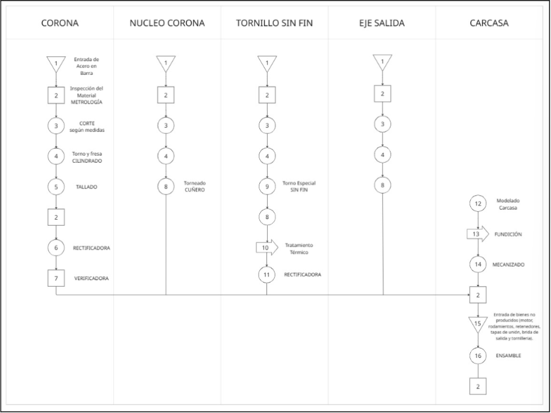
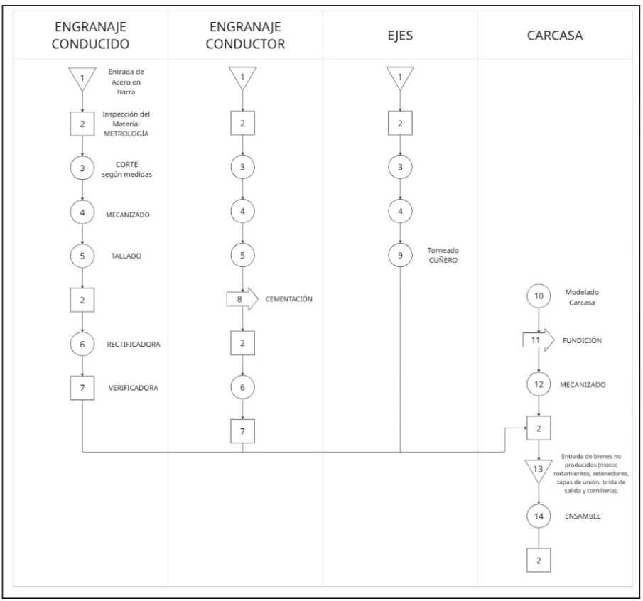
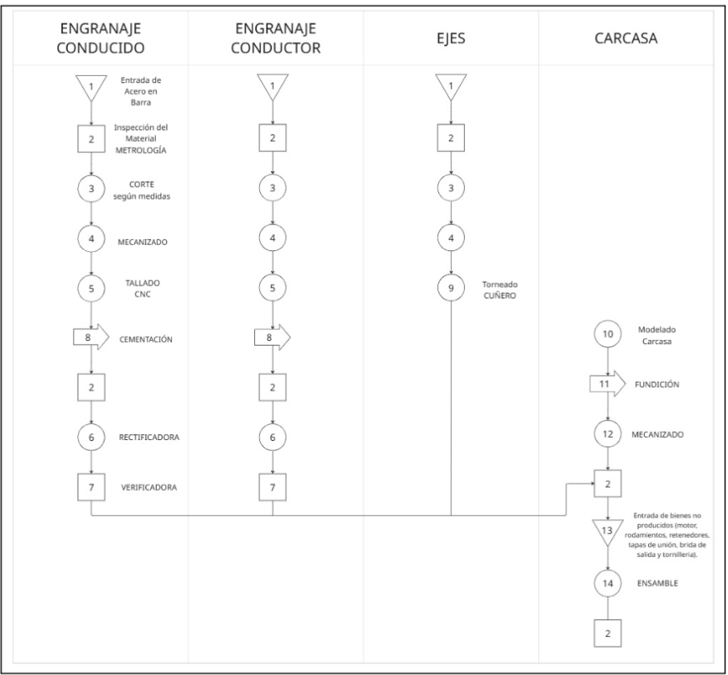

Diagrama de operaciones de proceso.
Sinfín Corona
En este diagrama se muestra el desarrollo del conjunto sin fin–corona. Para este tipo de transmisión se fabrican tres elementos principales:
- Núcleo de la corona
- Corona
- Tornillo sin fin
Tanto la corona como el núcleo no reciben tratamiento térmico, mientras que el tornillo sin fin sí requiere un proceso térmico específico y el flujo general del proceso incluye:
- Recepción de materia prima
- Inspección inicial
- Corte del material
- Operaciones en torno y fresado
- Procedimientos específicos según la pieza:
- Corona y núcleo: mecanizados sin tratamiento térmico adicional
- Tornillo sin fin: mecanizados y tratamiento térmico correspondiente
- Acabados y control de calidad
Los ejes y la carcasa siguen procedimientos comunes a los demás tipos de engranajes.
Engranajes Helicoidales.
Engranajes Cónicos.
| Tipo de Producto | Etapas de Proceso | MLT Parcial | MLT Global | Takt Time (min) | Tiempo de Ciclo Máximo (min) | Tasa de Producción (und/min) |
|---|---|---|---|---|---|---|
| Sinfín Corona | Tornillo Sinfín | 1820 | 1847 | 4.976 | 4.896 | 121 |
| Corona | 76 | |||||
| Núcleo | 52 | |||||
| Carcasa / Ejes | 45 | |||||
| Helicoidal de Ejes Paralelos | Piñón | 1300 | 1877 | 4.976 | 4.896 | 121 |
| Rueda | 81 | |||||
| Carcasa | 1395 | |||||
| Ejes | 45 | |||||
| Cónico de Inversión de Giro | Piñón | 1605 | 1772 | 9.933 | 9.782 | 60 |
| Rueda | 1070 | |||||
| Carcasa | 1395 | |||||
| Ejes | 45 |